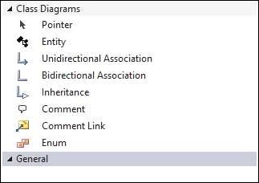
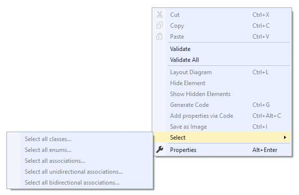

Using the Design Surface
 Let’s add a design surface to our new project.
Let’s add a design surface to our new project.
- Right-click the project root and select Add/New Item… from the dropdown menu.
- Find the Data folder under Visual C# Items in the tree to the left and select EFDesigner from the list.
- Name the file to your liking. The name of the file will become the default name of the generated DbContext, though you can change that later. For our example we’ll call it MyModel.
- Click Add.

Three files will be added to your project: MyModel.efmodel, MyModel.efmodel.diagram and MyModel.tt
- The .efmodel file holds the details of your design
- The .efmodel.diagram file holds the details of the visual representation of your design, defining what you see on the screen
- The .tt file is a T4 template, the entry point into code generation. Other T4 templates were installed, but those are in a common location where your Visual Studio extensions reside
Should you decide to rename these files later, it’s important that the file names stay in sync. In fact, if you do rename them, you’ll need to make a manual edit to the .tt to let it know the name of the .efmodel file, since it needs to find that when you want to generate code. That’s in line 17 of the .tt file, but we’ll talk more about that later.

Open the .efmodel file and – so exciting! – you’re presented with a blank screen. No worries – this is where you’ll model your classes. In your toolbox, you’ll see various items that can be added to model.
| Tool | Description |
|---|---|
| Entity | A persistent class |
| Unidirectional Association | A navigation property that only goes one way. The starting class will have a property of the type of the ending class (or a collection of them, depending on cardinality), but not the other way around. |
| Bidirectional Association | A navigation property that will create properties in classes on both ends. |
| Inheritance | Standard .NET inheritance (and its associated constraints). Start the line at the derived class and point to bhe base class |
| Comment | Add a comment box anywhere on the model |
| Comment Link | Link an existing comment to an Entity or Enum. Not required since comments can be free-floating, but nice to have if the comment refers to something specific on the diagram. |
| Enum | An enumeration |
Design Surface Properties
A peek at the Property page when you have the design surface selected (the background, rather than anything on it), shows the properties pertinent to the model itself and the DbContext class you’ll generate. These are as follows:
| Property | Description |
| Code Generation | |
| Chop Method Chains | Boolean. If true, will chop (and align on dot) long method chains in the generated code |
| DbContext Output Directory | String. The project directory for generated DbContext-related files |
| Default Collection Class | String. The type of container generated for associations (if not overridden). Must implement ICollection<T>. |
| Default Identity Type | String. Default type for ID properties in new classes. Valid values are 'Int16', 'Int32', 'Int64', 'Byte' and 'Guid' |
| Entity Framework Version | String. Version of Entity Framework for generated code. Values are currently 'EF6' and 'EFCore' |
| Entity Output Directory | String. The project directory for generated Entity files |
| Enum Output Directory | String. The project directory for generated enumeration files |
| File Name Marker | String. The text appended to the entity name for generated files. E.g., if set to "generated" (the default), files will be named "MyClass.generated.cs", "MyDbContext.generated.cs", etc. |
| Inheritance Strategy | String. How tables will be created/used to handle inheritance. Values are "TablePerConcreteType", "TablePerHierarchy" and "TablePerType". See Implementing Inheritance with the Entity Framework 6 in an ASP.NET MVC 5 Application and Inheritance - EF Core with ASP.NET Core MVC tutorial |
| Lazy Loading Enabled | Boolean. If true, entity container will allow lazy loading. See DbContextConfiguration.LazyLoadingEnabled Property |
| Namespace | String. Default namespace for all generated classes. Can be overridden on a class-by-class basis. |
| Proxy Generation Enabled | Boolean. If true, context will generate proxies for POCO entities. See DbContextConfiguration.ProxyCreationEnabled Property. |
| Database | |
| Automatic Migrations Enabled | Boolean. If true, code will allow automatic database migrations to be run when changes are detected. See DbMigrationsConfiguration.AutomaticMigrationsEnabled Property. |
| Concurrency Default | String. Default concurrency handling strategy. Values are 'Optimistic' and 'None'. See Handling Concurrency with the Entity Framework 6 in an ASP.NET MVC 5 Application. |
| Connection String | String. Connection string to use as the default connection string for the DbContext. Mutually exclusive with Connection String Name |
| Connection String Name | String. Name of connection string in host application config file to use as the default connection string for the DbContext. Mutually exclusive with Connection String |
| Database Initializer Type | String. Initialization strategy to synchronize the underlying database when the DbContext doesn't match the database. Values are 'CreateDatabaseIfNotExists', 'DropCreateDatabaseAlways', 'DropCreateDatabaseModelChanges', 'MigrateDatabaseToLatestVersion', and 'None'. For a primer on migration strategies, see Julie Lerman's excellent MSDN Magazine article Data Points : A Code First Migrations Mystery: Solved |
| Database Schema | String. The schema name for your database tables |
| Entity Context | |
| Entity Container Access | String. Code visibility for entity container. Values are 'Internal' and 'Public'. |
| Entity Container Name | String. Name of generated DbContext-derived class |
| Misc | |
| Database Type | String. Value of ProviderManifestToken attribute, for optimization of runtime database type is known and unchanging. Values are 'None', 'SqlServer' (2008) and 'SqlServer2012'. For more information see DbProviderInfo.ProviderManifestToken Property. |
| Show Cascade Deletes | Boolean. If true, will display associations that cascade delete as dashed red lines, otherwise all associations will display as solid black lines. |
| Transform On Save | Boolean. If true, will run Visual Studio's Transform All Templates command when the model is saved |
| Warn On Missing Documentation | Boolean. If true, will generate warnings when summary documentation is missing for classes, properties and association ends. |
Context Menu
Right-clicking on the design surface displays a Visual Studio context menu with some new choices pertinent to the designer.

| Menu choice | Description | ||||||||||||
| Cut, Copy, Paste | You can cut or copy, then paste, classes and enums. The pasted elements will be adjusted so that they don't violate any rules (such as two elements not having the same name), but otherwise the properties will stay the same. If no classes or enums are selected in the designer, the cut and copy options will be disabled. If no classes or enums are in the clipboard, the paste option will be disabled. | ||||||||||||
| Validate | Checks the currently selected element (class, enum, etc.) against the validation rules built into the designer. Errors or warnings are displayed in Visual Studio's Error List window. If no element is selected, this validates the design surface itself. | ||||||||||||
| Validate All | Checks all model elements against the afore mentioned validation rules. Errors or warnings are displayed in Visual Studio's Error List window. | ||||||||||||
| Layout Diagram | Arranges all model elements on the design surface. If no elements are in the designer, this option will be disabled. Note that this is the stock "Layout Diagram" behavior for Visual Studio's Modeling SDK, so you could almost certainly do a better job by hand. | ||||||||||||
| Hide Element | Hides the currently selected element on the diagram. Any lines to or from that element will be hidden as well. This does not remove the element from the model, only makes it invisible in the diagram. Useful for tidying up a diagram that would otherwise be unreadable due to, for example, a common base class that all other classes inherit from. If no element is selected, this option will be disabled. | ||||||||||||
| Show Hidden Elements | Unhides any elements that were previously hidden, along with their association or inheritance lines. If no elements are hidden, this option will be disabled. | ||||||||||||
| Generate Code | Generates code for the elements modeled in the designer. If no elements are in the designer, this option will be disabled. | ||||||||||||
| Add properties via Code | Displays a dialog that lets you add multiple properties using EFDesigner's custom property syntax. See "Adding multiple properties" for more details. | ||||||||||||
| Save as Image | Creates a jpg file of the designer and lets you save it as a file. If no elements are in the designer, this option will be disabled. | ||||||||||||
| Select | One of the features of the Visual Studio property editor is the ability to edit properties of multiple items if they share that property. This submenu gives you the ability to select model elements by type so that you can conveniently edit properties of those elements together (e.g., setting the color of multiple classes all at once). If the pertinent element type isn't present in the designer, that option will be disabled.
| ||||||||||||
| Properties | Switches focus to the Properties window. |